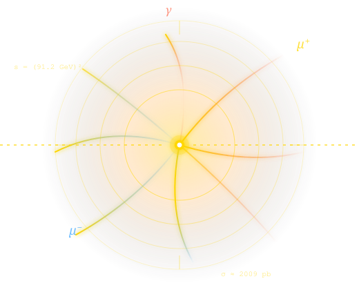

PROTEUS routes your integration problem to the best available algorithm — VegasFlow, i-flow, or MadNIS — automatically. Differentiable cross sections, SMEFT operators, hadronic PDFs, and ONNX export, all in one framework.

Monte Carlo integration is the workhorse of collider phenomenology — but the best algorithm depends on the problem. PROTEUS (Phase-space and Resonance-aware Orchestrator for Tensor-accelerated Estimation via Unified Samplers) is a smart wrapper that examines your integrand, picks the right GPU backend, and runs it in an isolated subprocess so TensorFlow and PyTorch never collide.
You write a function. PROTEUS handles backend selection, subprocess isolation, GPU memory management, multi-GPU assignment, result aggregation, and uncertainty reporting. No reinvention — VegasFlow, i-flow, and MadNIS are called through their official APIs, exactly as their authors intended.
A request flows through five layers — from your Python call to the GPU kernel. Each layer is replaceable; each backend lives in its own subprocess.
Every feature was driven by a real LHC-era use case: differentiable cross sections for likelihood fits, ONNX models for experiment software, phase-space generators with analytic validation.
Diagnostic samples decide between Vegas, normalising flows, and neural multi-channel based on dimension and peakedness.
Compute dσ/dθ via the Leibniz rule with central finite differences or tf.GradientTape — for any parameter, any process.
Warsaw-basis dimension-6 Wilson coefficient scans. Recovers SM exactly at C_i = 0; full interference + quadratic terms.
GPU-accelerated PDFs via PDFFlow. Drell-Yan and BSM resonance cross sections for LHC, Tevatron, and lepton colliders.
n-body Lorentz-invariant phase-space volumes Φₙ(s) with analytic comparison and pull validation for n = 2 – 6.
Export trained i-flow / MadNIS models to ONNX for C++ deployment in Delphes, full-sim, or experiment frameworks.
Rejection unweighting and PyTorch-based neural unweighting with reported efficiency and per-event weights.
i-flow ensemble mean and variance for combined Monte-Carlo + machine-learning uncertainty quantification.
PROTEUS picks the backend, runs it in an isolated worker, and returns a typed result object with value, error, backend name, wall-clock time, and rich metadata.
from frontends.physics_frontend import PhysicsFrontend
pf = PhysicsFrontend(verbose=True)
r = pf.compute_cross_section(
process='ee_to_mumu',
ecm=91.2,
n_calls=500_000,
)
print(f"σ = {r.value:.1f} ± {r.error:.1f} pb")
# σ = 2009.3 ± 0.7 pb (Z-pole, validated)
from frontends.general_frontend import GeneralFrontend
import numpy as np
gf = GeneralFrontend(verbose=True)
r = gf.integrate(
func = lambda x: np.exp(-0.5*np.sum(x**2,axis=-1)),
n_dim = 5,
bounds = (-4, 4),
n_calls = 200_000,
)
print(r.summary())
# value=39.84 ±0.03 backend=vegasflow t=3.1s
Whether you prefer a terminal session like MadGraph, a Gradio web UI for exploration, or the raw Python API for batch jobs — same engine, same results.
MadGraph-style interactive shell with tab completion, history, and a phase-aware progress spinner. Launch with ./bin/proteus.
Seven tabs covering general integration, HEP physics, hadronic processes, phase space, EFT, gradients, and ONNX export — with LaTeX-rendered math.
See the tabsThree frontends — GeneralFrontend, PhysicsFrontend, EFTFrontend — for embedding PROTEUS in fits, scans, and pipelines.
Questions, ideas, bug reports, and pull requests are all welcome. Whether you're a phenomenologist, an experimentalist, or just curious about Monte Carlo on GPUs.